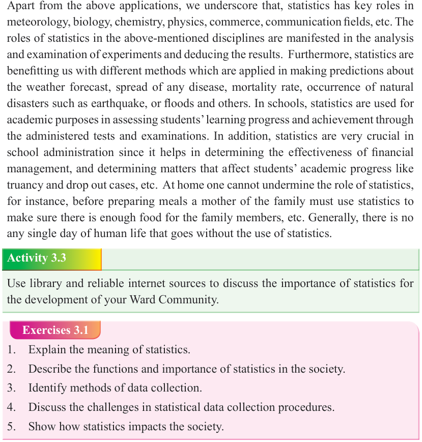
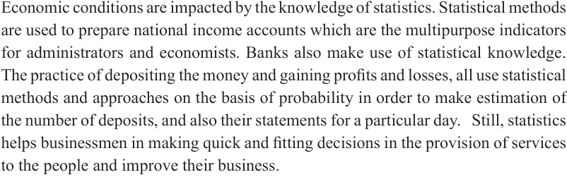

Form Two
Tanzania Institute of Education (TIE)


Bible Knowledge
43


Application of statistics in the field of economics

Economic conditions are impacted by the knowledge of statistics. Statistical methods are used to prepare national income accounts which are the multipurpose indicators for administrators and economists. Banks also make use of statistical knowledge.
The practice of depositing the money and gaining profits and losses, all use statistical methods and approaches on the basis of probability in order to make estimation of the number of deposits, and also their statements for a particular day. Still, statistics helps businessmen in making quick and fitting decisions in the provision of services to the people and improve their business.

Application of statistics in other fields
Apart from the above applications, we underscore that, statistics has key roles in meteorology, biology, chemistry, physics, commerce, communication fields, etc. The roles of statistics in the above-mentioned disciplines are manifested in the analysis and examination of experiments and deducing the results. Furthermore, statistics are benefitting us with different methods which are applied in making predictions about the weather forecast, spread of any disease, mortality rate, occurrence of natural disasters such as earthquake, or floods and others. In schools, statistics are used for academic purposes in assessing students’ learning progress and achievement through the administered tests and examinations. In addition, statistics are very crucial in school administration since it helps in determining the effectiveness of financial management, and determining matters that affect students’ academic progress like truancy and drop out cases, etc. At home one cannot undermine the role of statistics, for instance, before preparing meals a mother of the family must use statistics to make sure there is enough food for the family members, etc. Generally, there is no any single day of human life that goes without the use of statistics.

Activity 3.3
Use library and reliable internet sources to discuss the importance of statistics for the development of your Ward Community.
Exercises 3.1
1. Explain the meaning of statistics.

2. Describe the functions and importance of statistics in the society.
3. Identify methods of data collection.


4. Discuss the challenges in statistical data collection procedures.
5. Show how statistics impacts the society.